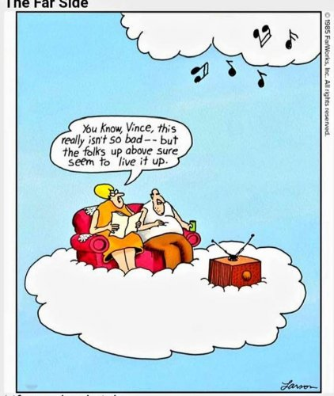

"The walrus and the carpenter were walking close at hand
They wept like anything to see such quantities of sand.
"If this were only cleared away!” they said, "it would be grand”
--Lewis Carrol
It’s well into May but it’s been cold here on the eastern US, and raining heavily for days. My new little home is dark and raw. I’m bundled up in two sweatshirts and double socks.
Meanwhile my friends in California are posting pictures of themselves smiling in the sun, in shorts or bathing suits, next to a pool or the beach, or on bikes, all golden and glowy and warm.
Sad face. Deprived me is lacking sunshine, warmth and the proper geographic location.
Clearly I am a member of the enormously large contingent of folks who are Missing Out.
We're missing out on friends and parties and relationships, missing out on having children, missing out on having enough money, enough time, enough health, enough enlightenment.
There are billions of Missing-Out Club members, all left out in some way from the whatever-it-is good stuff that happens to others but not us.
Still, I bet even they have more warm sun than I do.
I mean, yeah ok sure, I am actually warm and dry here in rainy PA. And looking out my office window, I can see grand old trees, a new fox family, a rabbit, a ground hog. And yes the air smells sweet from all that rain in a way that drought-ridden CA never does.
But never mind that. The gifts of the actual present are nice and all, but something else would sure be better.
Which is really rude, if we think about it. Greedy too.
Like whatever existence provides is inadequate. And like anyone is owed a different life and different circumstances.
Just because we think we want them.
Much like toddlers.
Here is existence providing abundance, and we say “Pfft. Fine but I want THAT,“ and point to something which is
not here.
Attention goes to the empty space and what is not filling it.
So it seems we have been right all along.
We are indeed missing out.
Just not on what we thought.
We’re missing out on experiencing the present.
Humans are constantly not noticing the vast abundance of now.
While looking out the window for something else.
Meanwhile, our constant dissatisfaction is perhaps misplaced.
Because while we think it’s a house or a family or a bank account which is going to make things better for us,
in actuality, no life circumstance will ever be enough.
Because an individual person can not ever be sufficient and complete.
Not-enoughness is built into the sense of being a separate self.
Lack is a given.
To be human is to be incomplete.
Separate beings can never be whole, can never be every thing.
Separate beings can only be- at best- small, inadequate parts of a bigger whole.
There is a sense that a critical essence of being is missing.
And we know it.
We feel that lack of connection to what is truer, and to what we more truly are.
We feel it.
And then call it "missing out."
Misattributing the cause.
Mistakenly thinking that what’s missing is the sun, the fun, the love, or more time on the calendar.
When all that’s really wanted is only, and ever,
to get back to the garden.
Which was never actually left.
It ‘s just that the garden lives in the present.
We're in it Now.
And it’s ignored.
When all we need to do is notice
What is overflowingly here
And present now
Instead of
what isn’t.
Click here to get your Mind-Tickled every week.
Watch Judy and Shiv Sengupta discuss spiritual anarchy
Click here to watch Judy on Buddha at the Gas Pump
Click to watch Judy and Walter have fun chatting about about
nonduality, the self, consciousness, awareness, free will
and other light and breezy stuff
Judy And Robert Saltzman talk nonduality
and https://www.youtube.com/watch?v=7fv_vsvaejs
and https://www.youtube.com/watch?v=3DAn8Rqg3I0
"All desire is a longing to come home.
We are the dreamers in this dream,
The source of the hidden principle is ourselves, and it is fired by our longing to come home."
--Tony Parsons
